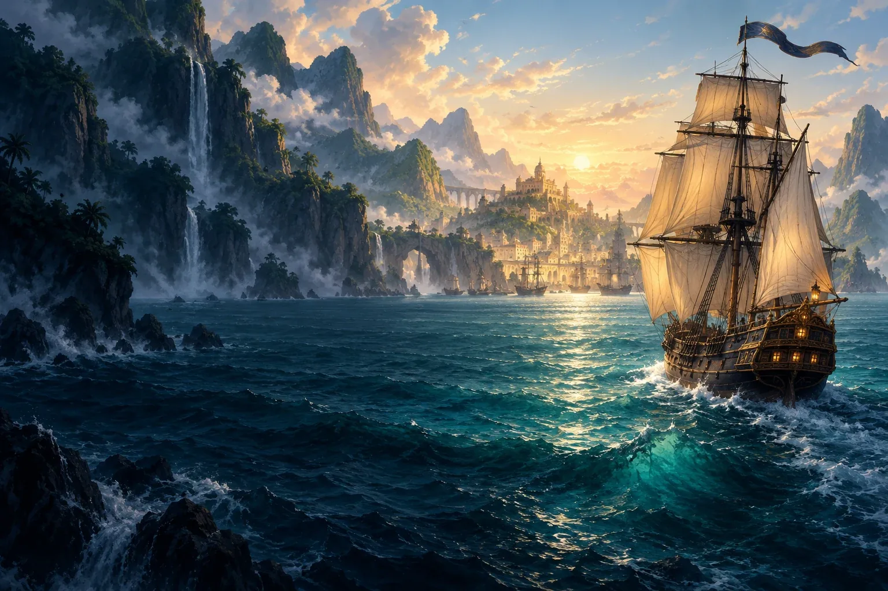
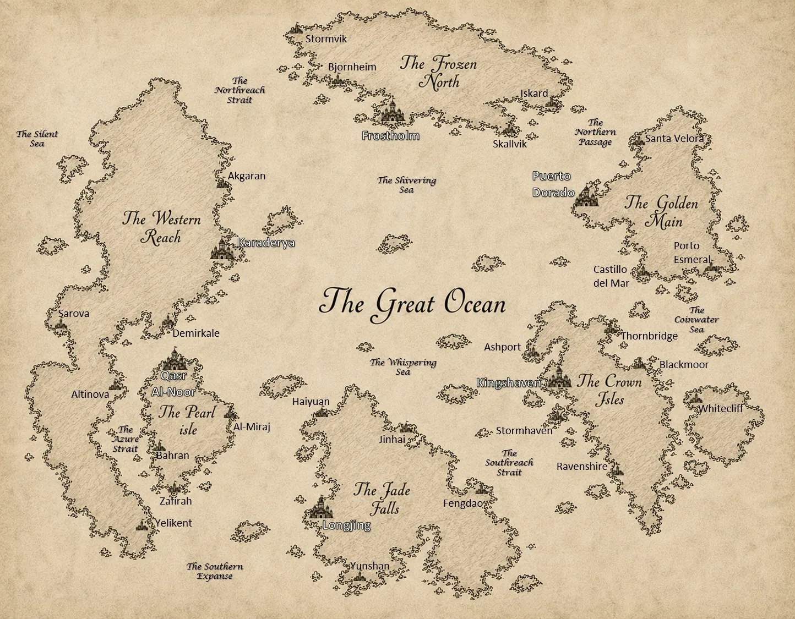

Ocean Rivals
Command your cannons. Choose your crew. Chart your course through the rival powers of Selquorath.
Discover Ocean Rivals
MYTHWAVE STUDIOS
Fueled by Passion, Driven by Adventure
Independent games. Interconnected stories.
Discover the many sides of Selquorath.
THE CHRONICLES OF SELQUORATH
Six great regions. A history beneath the waves. Selquorath is the shared universe behind our games, where each adventure reveals another part of the story.
Enter the Chronicles
SELQUORATH · CHART OF THE KNOWN SEASOUR GAMES
Command your cannons. Choose your crew. Chart your course through the rival powers of Selquorath.
Discover Ocean RivalsBuild a fortune on the open sea. Follow the routes, risks, and decisions behind Don Mateo’s rise.
Discover The Gilded Routes: The Rise of Don MateoLook closer. Ask carefully. Uncover the dark truths buried beneath a frozen settlement.
Discover Frostvein: Shadows of the NorthTwo little heroes. A sea full of silly surprises. Let’s rescue Captain Honeybeard!
Discover Bourly Bourly Seas!!!THE STUDIO BEHIND THE STORIES
We’re an independent game studio driven by storytelling, adventure, and worldbuilding. Our games cross genres and generations, with Selquorath connecting them all.
Meet MythWave StudiosFROM THE STUDIO
No announcements yet. Future development news, trailers, and release updates will appear here.